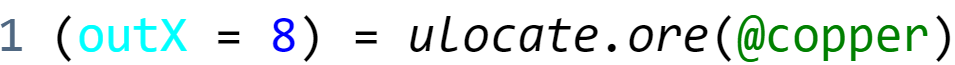

Main idea of the project was upgrading different MLOG tool, MLOG+1. I wanted to create the possibility to create subroutines and functions, have more advanced language than the MLOG+1 which consists of simple instructions. My lexer was made by recreating (Python to JavaScript) and enhancing the simple lexer of this repository. My parser was made by recreating (C++ to JavaScript) and enhancing the pretty advanced parser of this repository. While testing it, I think in the original PropScript code is possible to do something like this: , but maybe not. Right now, I only have lexer and parser, you can see the AST in console in the editor. I will hopefully work on compiler soon.
"okay buut all it does is print a ast" & "kinda lame" - bendn#6975 05/18/2023 12:53AM
Well yes, but it also does syntax highlighting, and in future also will compile it to MLOG. - HackerKuba2009#9722 05/27/2023 17:54PM